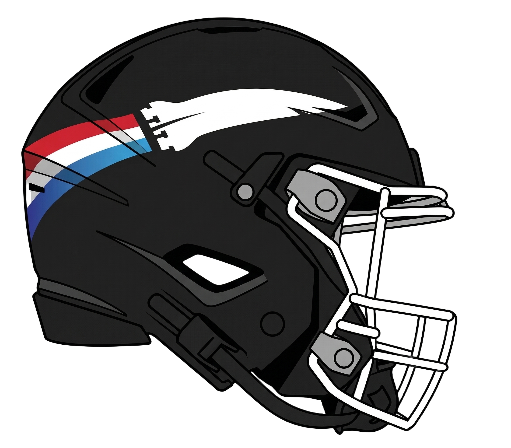

Roster
Offense
QB
#16
Greg Williams | FR
PASS: 3,222 yds, 23 TD, 10 INT, 62%
RUSH: -5 yds
Wayne Fontenot | JR
PASS: 510 yds, 7 TD, 1 INT, 60%
Ryan Vincent | SO
PASS: 56 yds, 3 TD, 0 INT, 62%
HB
#7
Jordan Vaughn | FR
RUSH: 1,382 yds, 23 TD, 8.6 avg
REC: 37 rec, 511 yds, 3 TD
Cam Miller | JR
RUSH: 641 yds, 5 TD, 6.0 avg
REC: 15 rec, 182 yds
Brandon Ford | JR
RUSH: 521 yds, 2 TD, 6.9 avg
Career-ending injury Week 6
Eric Carlson | JR
RUSH: 72 yds, 0 TD, 4.8 avg
WR
#3
Samuel Owusu | SR(RS)
REC: 60 rec, 896 yds, 7 TD
Ryan Brown | SR
REC: 40 rec, 458 yds, 5 TD
Chris Graham | SR(RS)
REC: 29 rec, 501 yds, 7 TD
Dominique Easley | JR
REC: 12 rec, 144 yds, 1 TD
Tyreek Parrish
REC: 11 rec, 120 yds, 1 TD
TE
#81
Cody Stewart | FR
REC: 47 rec, 828 yds, 8 TD
N. Marshall
REC: 11 rec, 134 yds, 0 TD
OL
LT - B. DeLuca | 3 sacks allowed
LG - Jon Turnbull | 0 sacks allowed (SEC First Team)
C - T. Page | 1 sack allowed
RG - Dan Sims | 0 sacks allowed (SEC Second Team)
RT - D. Owens | 3 sacks allowed
FB
Beef Wellington
RUSH: 7 yds, 4 TD (goal-line FB)
Defense / Special Teams
LEDG
Joe White | SO
DEF: 28 TAK, 17 TFL, 5 SACK, 2 FF, 1 FR
L. Outlaw
DEF: 10 TAK, 6 TFL, 5 SACK, 1 FF
REDG
R. Hawkins
DEF: 18 TAK, 12 TFL, 4 SACK, 3 FR
DT
Beef Wellington | SO
DEF: 12 TAK, 7 TFL, 4 SACK, 1 FR
D. Mayfield | SR
DEF: 16 TAK, 8 TFL, 5 SACK, 2 FR
MIKE
#5
Tim Missile | JR
DEF: 110 TAK, 29 TFL, 10 SACK, 5 INT, 5 FF, 1 FR, 1 TD
Alfred Clifford | FR | 74 OVR
DEF: 67 TAK, 13 TFL, 5 SACK, 1 FF, 1 FR
WILL
D. Carter
DEF: 22 TAK, 6 TFL, 3 SACK
CB
Dan Wheeler
DEF: 52 TAK, 8 TFL, 3 SACK, 2 INT, 10 PD (SEC First Team)
David Bennett |
DEF: 38 TAK, 2 TFL, 1 INT, 1 FR, 10 PD
C. Willis |
DEF: 37 TAK, 5 TFL, 2 SACK, 6 PD
Mantrel Gordon |
DEF: 16 TAK, 2 INT, 3 PD, 2 blocked kicks
Tre'Varius Ward
DEF: 22 TAK, 4 TFL, 1 SACK, 4 PD
FS
#27
Nick Dorsey |
DEF: 74 TAK, 2 TFL, 6 INT, 2 FF, 1 FR, 2 DEF TD
SS
Steven Parker | SR
DEF: 63 TAK, 15 TFL, 4 SACK, 1 FF (SEC Second Team)
K
Jacob Harrison
KICK: 13/23 FG (56.5%), Long: 46 yds
XP: 53/55 (96%)
P
Dave Dunlap
PUNT: 28 punts, 41.5 avg, 8 inside 20
KR / PR
Chris Graham
KR: 40 ret, 868 yds, 21.7 avg, 2 TD (Long: 100 yds)
PR: 27 ret, 360 yds, 13.3 avg, 3 TD
Schedule
Week 0: RCU vs. Sandy Creek W 45-0
Week 1: RCU @ #17 Iowa State W 41-13
Week 2: BYE
Week 3: BYE
Week 4: RCU @ UCF W 42-21
Week 5: RCU vs. #4 Florida W 54-39
Week 6: RCU @ South Alabama W 28-26
Week 7: BYE
Week 8: RCU @ Boise State W 35-23
Week 9: RCU @ FAU W 41-38
Week 10: RCU vs. Florida State W 41-38
Week 11: RCU @ #23 Auburn W 39-38
Week 12: RCU @ #18 Alabama L 38-45
Week 13: RCU @ Georgia State W 65-3
Week 14: RCU @ California W 44-27
- Cody Stewart: 8 rec, 148 yds, 4 TD vs Sandy Creek (SEC POTW)
- Tim Missile: 3 INT, 1 pick-six vs #17 Iowa State (National POTW)
- Nick Dorsey: 2 INT, 1 FR TD vs #4 Florida (National POTW)
- Ryan Brown: 9 rec, 144 yds, 4 TD vs South Alabama (SEC POTW)
- Jordan Vaughn: 5 TD vs Georgia State (National POTW)
Conference Championship: Did Not Qualify
Finished 4th in SEC (7-1) behind Miami, Florida, and Alabama on tiebreakers
Birmingham J-Lab Bowl
RCU vs. Old Dominion W 38-16
Mantrel Gordon: 10 tkl, 1 TFL, 1 INT (SEC Defensive POTW)
Overall Record
12-1 (7-1 SEC)
Points For: 551 | Points Against: 327 | Differential: +224
Final Ranking: #13
Birmingham J-Lab Bowl Champions
Team Statistics
| Stat | Total | Per Game | SEC Rank |
|---|---|---|---|
| Points Scored | 551 | 42.4 | 2nd |
| Total Yards | 6,360 | 489 | 1st |
| Rushing Yards | 2,610 | 201 | 1st |
| Passing Yards | 3,750 | 288 | 5th |
| Points Allowed | 327 | 25.2 | 4th |
| Rush Yards Allowed | 925 | 71 | 1st |
| Pass Yards Allowed | 4,734 | 364 | 12th (LAST) |
| Sacks | 48 | 3.7 | 2nd |
| Takeaways | 26 | 2.0 | 1st |
| Turnover Differential | +13 | +1.0 | 2nd |
Awards and Honors
| Award | Winner |
|---|---|
| Chuck Bednarik Award (NDPOY) | Tim Missile |
| Bronco Nagurski Trophy (DPOY) | Tim Missile |
| Dick Butkus Award (Best LB) | Tim Missile |
| Doak Walker Award (Best RB) | Jordan Vaughn |
| Shaun Alexander Award (Best FR) | Jordan Vaughn |
| Jet Award (Best Returner) | Chris Graham |
| Heisman Trophy Runner-Up (#2) | Jordan Vaughn |
All-Americans
National First Team: Jordan Vaughn (HB), Tim Missile (MIKE), Nick Dorsey (FS)
SEC First Team: Jordan Vaughn (HB), Cody Stewart (TE), Jon Turnbull (LG), Tim Missile (MIKE), Dan Wheeler (CB), Nick Dorsey (FS)
SEC Second Team: Dan Sims (RG), Steven Parker (SS)
National Freshman Team: Jordan Vaughn (HB), Cody Stewart (TE), Alfred Clifford (MIKE), David Bennett (CB)
SEC Freshman Team: Greg Williams (QB), Jordan Vaughn (HB), Cody Stewart (TE), Lawrence Outlaw (REDG), Bryson Conrad (DT), Alfred Clifford (MIKE), David Bennett (CB)
Graduating / Departed Players
| Player | Pos | Departure |
|---|---|---|
| Samuel Owusu | WR | Graduated |
| Ryan Brown | WR | Graduated |
| Chris Graham | WR/Ret | Graduated |
| Steven Parker | SS | Graduated |
| D. Owens | RT | Graduated |
| D. Mayfield | DT | Graduated |
| Dave Dunlap | P | Graduated |
| Jacob Harrison | K | Graduated |
| C. Willis | CB | Graduated |
| Wayne Fontenot | QB | Transferred, Quit Football |
| Ryan Vincent | QB | Transferred to Kansas State |
| Dan Wheeler | CB | Transferred to Mississippi State |